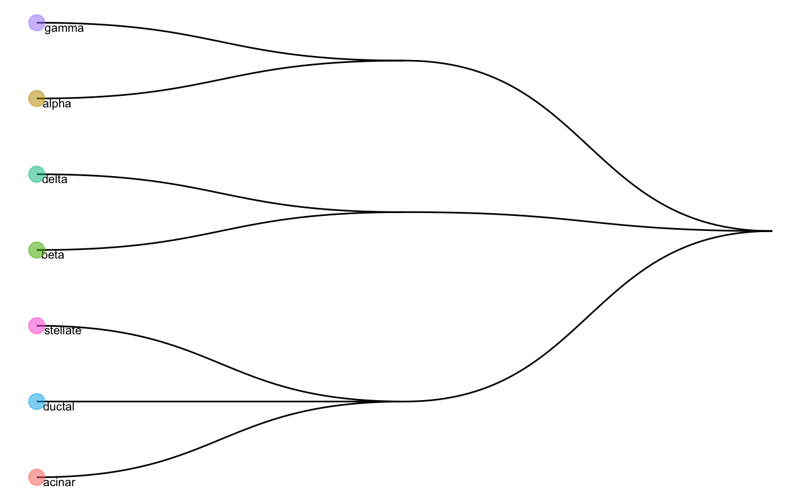

A function generating HOPACH tree using the average expression matrix for each cell type.
runHOPACH(data, plot = TRUE, kmax = 5)
| data | A matrix of average expression matrix (each row indicates the gene, each column indicates the cell type) |
|---|---|
| plot | Indicate whether plot or not |
| kmax | Integer between 1 and 9 specifying the maximum number of children at each node in the tree. |
Return a list where
cutree_list: A list indicates the hierarchical cell type tree
plot: A ggplot visualise the cell type tree
van der Laan, M. J. and Pollard, K. S. (2003) ‘A new algorithm for hybrid hierarchical clustering with visualization and the bootstrap’, Journal of Statistical Planning and Inference. doi: 10.1016/S0378-3758(02)00388-9.
data("scClassify_example") wang_cellTypes <- factor(scClassify_example$wang_cellTypes) exprsMat_wang_subset <- scClassify_example$exprsMat_wang_subset avgMat_wang <- apply(exprsMat_wang_subset, 1, function(x) aggregate(x, list(wang_cellTypes), mean)$x) rownames(avgMat_wang) <- levels(wang_cellTypes) res_hopach <- runHOPACH(avgMat_wang) res_hopach$plot#> Warning: Removed 4 rows containing missing values (geom_text).